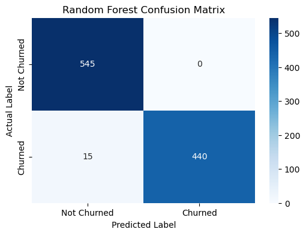

A comparative study of machine learning algorithms to predict user churn using behavioral signals from 5,000 customer records[cite: 333, 478].
Streaming platforms struggle with users who disengage gradually[cite: 345]. We use behavioral indicators like Support Tickets and Satisfaction Scores to predict churn before it happens[cite: 349, 486].
Baseline model; struggled with non-linear patterns[cite: 594].
Captured complex relationships perfectly.
Stronger performance but sensitive to data scale[cite: 595].
Deep dive into the Random Forest performance metrics[cite: 597].
Random Forest Confusion Matrix

Near-zero false alarms for targeted discounts[cite: 600].
Caught almost all potential revenue loss.
Balanced predictive power across classes[cite: 603].
Overall reliability on unseen data[cite: 593, 611].
The study concludes that ensemble learning (Random Forest) is significantly more accurate at identifying streaming churn[cite: 577, 611]. This allows the platform to automatically offer targeted discounts to the 98% of users identified as "at-risk," saving thousands in potential revenue loss[cite: 578].